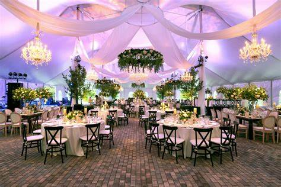

Tentang Kami
Didirikan pada tahun 1992 (25 Agustus 1992), kami memiliki pengalaman lebih dari tiga puluh tahun dalam menyelenggarakan acara untuk beberapa penggerak dan pelopor terbesar di dunia. Tempat kami awalnya dirancang untuk menampung 62 kepala negara dan delegasi mereka untuk KTT Gerakan Non-Blok ke-10 pada tahun 1992. Sejak saat itu, kami terus mengikuti perkembangan peristiwa dan teknologi komunikasi, memberikan layanan yang lancar dari awal hingga akhir. Balai Sidang Jakarta Convention Center memiliki luas sekitar 30.000 m2 dan terdiri dari aula bundar bergaya teater (Plenary Hall), dua ruang pameran (Exhibition Hall A & B), Aula Pertemuan, ruang perjamuan (Ruang Cendrawasih), lobi utama yang luas dan lobi yang lebih rendah, ruang dan lounge VIP, dan sepuluh ruang pertemuan lebih lanjut yang dapat dikonfigurasi agar sesuai dengan kebutuhan acara tertentu. Balai Sidang Jakarta Convention Center juga memiliki pusat bisnis untuk mendukung pertemuan Anda. Gudang berikat kami memfasilitasi bea cukai cepat untuk barang impor sementara. Tempat parkir independen berkapasitas 6.000 mobil terletak tepat di depan pusat konvensi, dan pilihan hotel kelas menengah hingga tinggi berada dalam jarak berjalan kaki atau berkendara singkat.
JCC (Jakarta Convention Center) adalah pusat konferensi terkenal yang terletak di Jakarta, Indonesia. JCC merupakan salah satu pusat konvensi tertua dan populer di Jakarta. Pusat konferensi ini pertama kali dibuka pada tahun 1974. Sejak itu, banyak konferensi nasional dan internasional, pameran, pameran perdagangan, olahraga dalam ruangan, dan konser musik penting telah diadakan di JCC. Salah satu momen bersejarah yang terjadi di JCC adalah Konferensi Gerakan Non-Blok ke-11 yang diadakan pada tahun tertentu (misalnya 1983). Konferensi ini merupakan pertemuan penting antara negara-negara non-blok di dunia dan menjadi acara besar yang dihadiri oleh pemimpin negara, diplomat, dan tokoh internasional terkemuka. Selain itu, JCC juga menjadi tempat diadakannya Konferensi Asia-Afrika pada tahun tertentu (misalnya 1955). Konferensi ini merupakan peristiwa bersejarah yang menyatukan negara-negara Asia dan Afrika dalam perjuangan melawan kolonialisme dan penindasan. Konferensi Asia-Afrika di JCC menjadi tonggak penting dalam perjalanan sejarah bangsa-bangsa yang sedang berjuang untuk kemerdekaan dan kemandirian.
Penghargaan